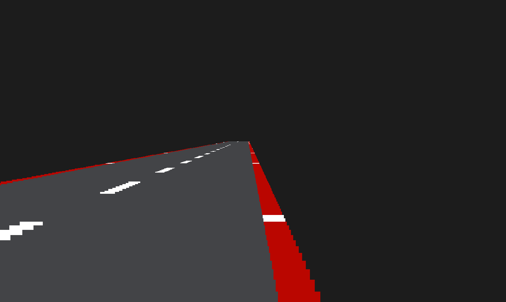

How does it work?
Road Segments
The road being renderd is built up of what I called "Road Segments". One Road Segment is one horizontal line of the road. These are in simply just rendered rectangles. Before being rendered their width and height, or "thickness", is calculated based on how far away from the camera the segment is rendered.
Calculating Road Segment sizes
What this function does is, from the 3D world coordinates of each Road Segment and the Cameras position and settings, calculate out the correct screen-coordinates to render the Road Segment at.
It also calculates the Width and Height that the Road Segment should be rendered with, it does this using the distance between the Camera and the Road Segment, the dimensions of the camera and the FOV.

Scale = 1;
Width = 10000;
Height = 200;
Vector RoadSegment::Project(const Camera& Cam)
{
Vector ScreenCoords;
Vector3 CamCoordDif;
Scale = Cam.FOV / (Position3D.Z - Cam.Position.Z);
ScreenCoords.y = (1 - Scale * (Position3D.Y - Cam.Position.Y)) * (Cam.Height / 2);
ScreenCoords.x = (Scale * (Position3D.X + Curve - Cam.Position.X)) * (Cam.Width / 2);
ScreenCoords.y = ScreenCoords.y < 0 ? 0 : ScreenCoords.y;
Width *= Scale;
Height *= Scale;
return ScreenCoords;
}
Curves and Hills
To make the hills and the road curve, I had to come up with a way to store a Map. This is so I can decide when and how the road should curve.
I did this by storing Map Segments in an array. Map segments contain 3 values:
struct MapSegment
{
int Length = 0;
float Curvature = 0.f;
float Hill = 0.f;
};
Length: For what distance / how long this segment should last.
Curvature: How much this segment should curve, and in what direction.
Hill: Same as Curvature, but for the vertical axis.

When drawing the road, the Road Segment's Position3D (world position) is determined based on what Map Segment we are currently in.
The proccess for calculating these are the exact same, the only difference is that the Y coordinate is calculated using the current Map Segment's Hill value, while the X coordinate uses the current Map Segment's Curvature value.
DistanceValue: The distance we've traveled along the map.
RenderDistance: How many Road Segments to render (to avoid melting the PC).
CurrentX/Y: The world coodrinate that the Road Segment should be at.
DeltaX/Y: How much the road curves / hills.
DeltaDeltaX/Y: How much the road's curve curves and hill hills.
CalculateRoadSegmentScreenPosition() Takes the Road Segment's world position and determines it's Screen Coordinates to be rendered at.
for (int i = DistanceValue; i < DistanceValue + RenderDistance; i++)
{
DeltaX = RoadSegments[i].Curve;
DeltaY = RoadSegments[i].Hill;
CurrentX += DeltaDeltaX;
RoadSegments[i].Position3D.X = CurrentX;
DeltaDeltaX += DeltaX;
CurrentY += DeltaDeltaY;
RoadSegments[i].Position3D.Y = CurrentY;
DeltaDeltaY += DeltaY;
CalculateRoadSegmentScreenPositions(RoadSegments[i], i);
}